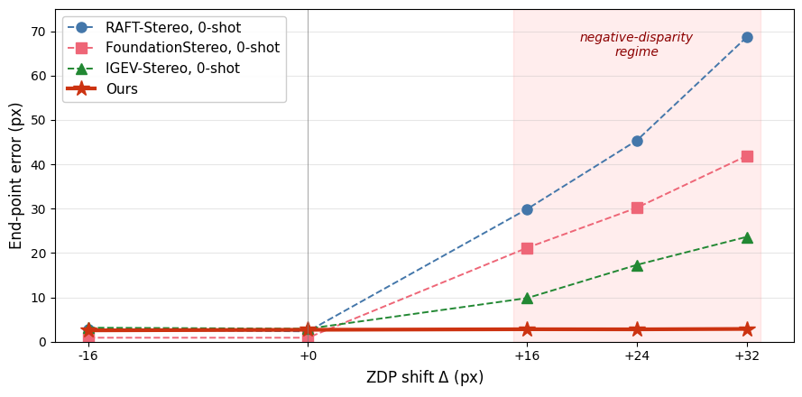
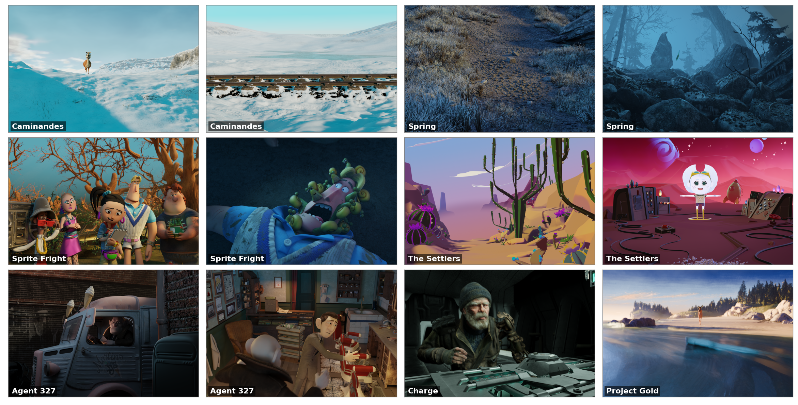

Modern stereo matchers fail by 19–62× the moment disparity turns negative.
Stereoscopic content, from cinema 3D to VR, lives there.
Video
The blind spot
On a controlled multi-ZDP benchmark, three SOTA backbones all degrade by 19–62× the instant disparity crosses zero. Our method (solid line) stays flat.

The dataset
4,405 open-movie frames rendered at five zero-disparity-plane shifts each, with analytical signed ground-truth disparity.

Results
End-point error (px) at the hardest shift, $\Delta=+32$. Fine-tuning on ZDPShift helps every backbone; the signed cost volume unlocks the cost-volume models.
| Model | Zero-shot | + ZDPShift | + Signed volume |
|---|---|---|---|
| RAFT-Stereo | 47.54 | 1.01 | — |
| IGEV-Stereo | 21.61 | 4.89 | 0.94 |
| FoundationStereo | 58.13 | 11.11 | 0.81 |